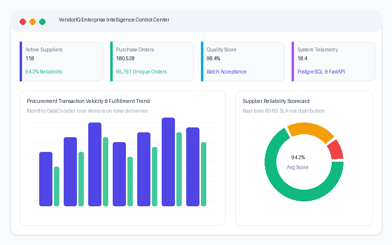

VendorIQ provides a centralized platform for managing vendors, procurement, deliveries, quality, invoices, contracts and vendor performance. It helps organizations monitor vendor reliability, identify risks and make data-driven procurement decisions.

Manage vendor profiles, categories, status, contact information and vendor records.
Manage products, purchase orders, vendor assignments and procurement workflows.
Track expected delivery dates, actual delivery dates, delays, delivery status and damaged goods.
Monitor quality scores, defective quantities, inspection results and quality remarks.
Manage invoices, due dates, payment status and payment records.
Monitor contract dates, contract value, compliance status and renewal status.
Analyze total orders, completed orders, delivery performance, quality score and response time.
Calculate vendor reliability and classify vendor risk levels.
Maintain vendor communication and issue-resolution information.
Provide alerts for relevant vendor, procurement, delivery and compliance events.
Provide vendor, procurement, supply-chain and performance reports.
Track relevant system activity and compliance information.
Vendor Registration
Vendor Approval
Vendor/Product Management
Procurement / Purchase Order
Delivery Tracking
Quality Inspection
Invoice & Payment
Contract & Compliance
Vendor Performance Analysis
Reliability & Risk Assessment
Reports & Notifications
Vendors
Purchase Orders
Contracts
Reliability %
VendorIQ is a centralized, intelligent platform for managing vendor reliability and supply chain risks. By collecting granular data across product catalogs, purchase orders, deliveries, invoices, quality inspections, and contract terms, VendorIQ computes dynamic reliability scores using real-time statistical algorithms. This empowers organizations to identify delivery risks early, control costs, and enforce SLA terms.
System Data Architecture (ERD-aligned): Centralized PostgreSQL schema featuring Users, Vendors, Products, Contracts, Purchase_Orders, Deliveries, Invoices, Quality_Inspection, Communications, Notifications, and Vendor_Performance tables connected via active foreign keys.
The platform features strict Role-Based Access Control (RBAC) ensuring users only access modules aligned with their responsibilities:
System-wide management, vendor oversight, analytics, audit log audits, and user account approvals.
Vendor, product catalog, purchase order creation, approval cycles, and procurement workflows.
Delivery monitoring, late alerts tracking, quality inspection logs, and supply chain performance KPIs.
Invoice monitoring, payment status management (Pending, Paid, Late), and payment timelines.
Read-only compliance audit trails, system activity log monitoring, and contract tracking.
Manage own vendor profile, view orders, invoices, contract metrics, chats, and personal reliability ratings.